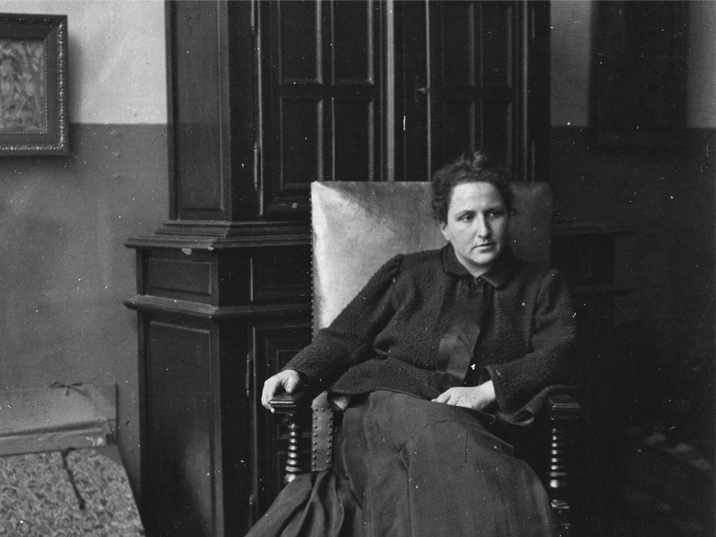

"그것을 말하는 방식이 곧 그것을 말하는 것이다"
"The way of saying it is the saying of it."

기독교 창작자들은 예술로 문화를 통해 신앙과 가치를 나타내고 세상을 변화시키는 데 중요한 역할을 합니다. 더불어 그들에게는 지속적인 재정적 지원과 성장할 수 있는 교육이 필요합니다. 기독교창의지원재단이 크리스천 창작자를 지원하는 "거투르드 스타인프로젝트"를 시작하게된 이유입니다.
거투르드 스타인 프로젝트는 창작자들이 예술 작품, 음악, 문학, 영화, 미술 등 다양한 분야에서 자신의 예술적 열정을 펼칠 수 있도록 돕습니다. 거투르드 스타인프로젝트를 통해 제공되는 지원은 아래와 같습니다.
거투르드 스타인 프로젝트는 더 많은 창작자들의 지원을 기다리고 있습니다. 글을 쓰고, 그림을 그리고, 문화운동을 기획하는 모든 창작자들의 지원을 환대합니다. 망서림없는 지원은 기독교 문화를 더욱 풍성하게 합니다.
거투르드 스타인 프로젝트의 목표는 크리스천 창작자들의 예술과 창작활동을 지원하고, 그들의 예술적 비전을 현실로 만들어 나가는 데 도움을 주는 것입니다. 이 프로젝트를 통해 창작자들은 예술과 문화를 통해 예수그리스도의 기쁜소식을 더 풍요롭게 만들 수 있을 것입니다. 기도와 참여로 창작자들의 열정과 문화 예술을 통한 선교활동을 지원해주십시오.
세상에는 다양한 이야기와 목소리가 존재합니다. 그 중에서도, 기독교의 깊은 메시지를 바탕으로 한 문화와 예술은 특별한 공감대와 희망을 전해왔습니다. 그러나 때로는 그런 목소리가 주목받지 못할 때가 있습니다. 기독교창의지원재단은 그런 목소리에 조금 더 귀를 기울이고자 합니다.
20세기 초, 거투르드 스타인은 그 시대의 문화예술가들에게 관심을 가지고 그들의 작품을 후원했습니다. 그녀의 접근은 예술의 가치를 알아보고, 그것을 널리 공유하는 데 있었습니다. 기독교창의지원재단의 정신은 거투르드 스타인과 다르지 않습니다. 기독교 창작자들을 발굴 하고 후원하여 더 많은 작품을 통해 기독교 창작의 지평을 넓히려고 합니다.
기독교 창작자들은 그들만의 독특한 시각과 메시지를 가지고 있습니다. 그 메시지는 사랑, 희망, 용기와 같은 기독교의 핵심 가치를 바탕으로 한 것입니다. 우리는 그들의 미처 발견되지 못한 목소리를 세상에 알리기 위해 노력하고자 합니다.
거투르드 스타인 프로젝트는 이런 비전을 가진 크리스천 창작자들과 그들을 응원하는 후원자들과 함께 이 길을 걷어 가는것 입니다. 거투르드 스타인처럼, 우리는 현대 문화 예술의 중심에서 문화와 예술을 통해 복음과 선교의 바람을 만들어나길 기대합니다. 기독교 창작자들의 목소리와 메시지가 세상에 전달되는 그 길에서, 함께 해주세요.
거투르드 스타인은 피카소와 헤밍웨이, 앙리 마티스등 수 많은 문화예술인을 발굴한 미국 출신의 컬렉터입니다. 그리고 요즘 표현으로 말하면, N잡러이기도 해요. 본래는 소설가였지만, 시인, 극작가, 그리고 미술품 수집가로도 활동했죠. 많은 N잡러가 그렇듯, 재밌이 정말 많은 사람이었습니다. 문학적 돌파력도 뛰어났지만, 미술을 감정하는 안목도 훌륭했죠. 30대가 된 1900년대에 스타인은 미국을 떠나 파리에 정착합니다. 그리고 본격적으로 예술 작품을 컬렉팅하고, 예술가들을 후원하기 시작해요. 당시 스타인이 구매한 작품의 고갱, 세잔, 마티스, 피카소 등 거장의 작품이 많았습니다. 그렇게 모은 작품들을 집에 하나씩 모아두었는데, 나중에는 작품이 너무 많아서 전장까지 작품이 걸릴 지경이었다고 해요. 그래서 그 집은 '스타인 갤러리'라고 불리게 되었습니다.